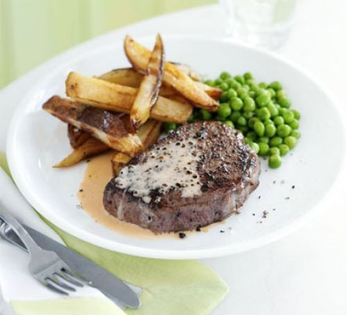

Fillet Steak

Description
Another one of our classic meal that we love to share.
This meal is so good, if you stare too long you may fall in love.
Ingredients
- Peas
- Potatoes
- 2 large shallots
- Butter
- 100ml red wine
- Rump Steak
- double cream
- brandy
- green peppercorns
Instructions
- Boil peas in hot water for about 5 minutes.
- Since the fillet is quite a thick cut of meat for medium rare it will take about 4-5 minutes on both sides.
- Coat well with butter until its cooked.
- Peel the potato and cut into rectangular pieces.
- Cook the potatoes until golden brown, around 8-10 minutes.
Making Peppercorn sauce
- Put butter in a sauce pan, then fry the diced shallots and add brandy until its almost all reduced.
- Pour 100ml of wine.
- Bring it to a boil and wait 5 minutes.
- Finally pour the double cream and let it thicken to your liking.
And of course, enjoy :).